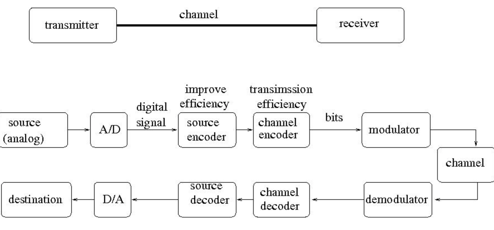
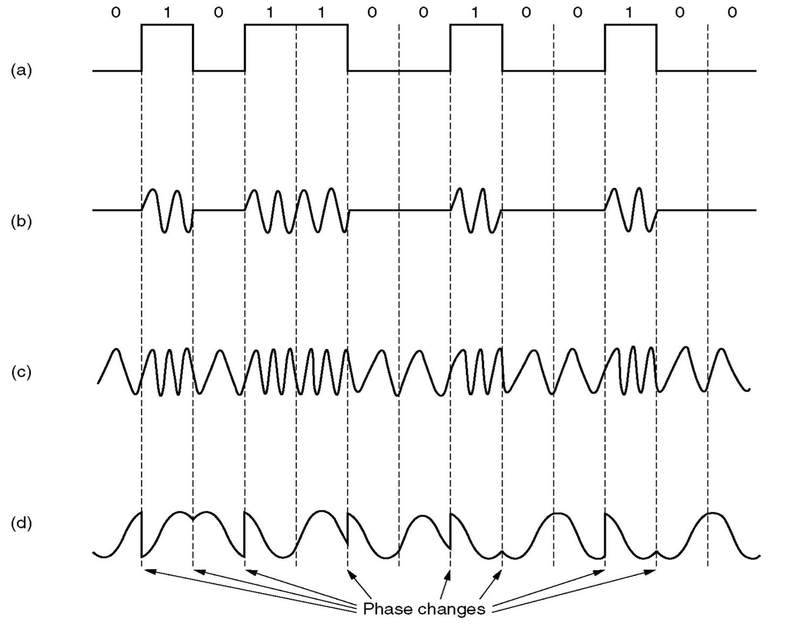
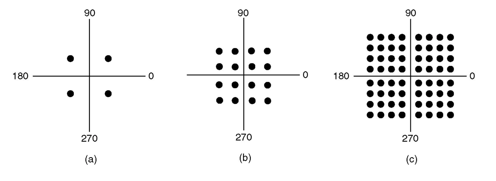

Lecture 4 - Notes
January 14, 2016
Physical Layer Internet Access
- Analogue Communication: an analogue signal as a waveform. For example your voice or a record player.
- Digital Communication: a digital signal, serialized into bits. Can be used to simulate analogue but can also be native binary data. For example an MP3 over the internet or a webpage.
A Digital Communication System

As shown in the image above we send an analogue source to an analogue to digital converter then a Modulator which sends it over our communication channel. We receive it and perform the the decoding steps before it arrives at the destination. Modulator-Demodulators (MODEMs) are used to convert the signal for transfer.
Modems
The signal starts in the frequency domain and has infinite harmonics. The channel has limited bandwidth[^bandwidth] and can help to compress? the signal.
[^bandwidth]: The difference between the highest and lowest frequencies that can be transferred without strong attenuation.

- a. A binary signal
- b. An Amplitude Modulation (AM) Signal
- c. An Frequency Modulation (FM) Signal
- d. An Phase Modulation Signal
The most common form of modulation today is Quadrature Amplitude Modulation (QAM). Below we have a number of constellation diagrams representing different QAMs.

- a. QPSK
- b. QAM-16
- c. QAM-64
With 16 bits of modulation (QAM-16) we can send four bits of data. Since,
The example below shows the mapping of bits to symbols in QAM-16.

Nyquist Limit
If an arbitrary signal has been run through a low-pass filter of bandwidth $H$, the filtered signal can be completely constructed by making only $2H$ samples per second. So the maximum speed of a noiseless channel is,
where $V$ is the number of symbols in the constellation and $H$ is the bandwidth. In summary,
- Baud Rate: The # of samples per second
- Symbol Rate: Each baud $\iff$ one symbol
- Data Rate: $2H \log_2{(V)}$ bps
Shannon Limit
For any degree of noise contamination ($N$) on a communication channel it is possible to communicate discrete data near error free at a maximum rate of
where $\frac{S}{N}$ is the signal to noise ratio and $H$ is the bandwidth.
Internet access through a Phone
The first access was through analogue dialup. A Modem was used on a telephone line with unshielded twisted pair (UTP). You could receive at up to 56 Kbps down. It had an $8~\text{KHz}$ band, $8$ symbols per second and 256-QAM (8 bits).
Asymmetric DSL (ADSL)
ADSL was introduced to free up more bandwidth. It provides upstream and downstream at the same time. The DSL modem is then connect to your computer.
Internet access through a Cable Line
This uses a a shared coaxial cable, internet access is provided through Hybrid Fibre Coaxial (HFC) Protocol (DOCSIS). They divided the frequency band into sections for different tasks.